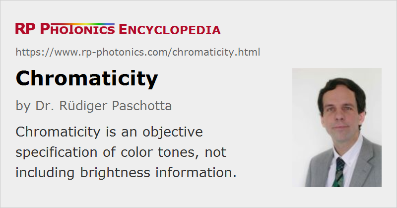

Chromaticity
Definition: an objective specification of measured or calculated colors, used in addition to luminance (brightness)
German: Chromatizität
Category: vision, displays and imaging
How to cite the article; suggest additional literature
Author: Dr. Rüdiger Paschotta
In many technical applications, perceivable colors are represented by coordinates in some colors space. Usually, such a space has three dimensions, corresponding to the three different kinds of color receptors used for photopic vision of the human eye. Frequently, one takes one of those dimensions to correspond to the luminance, determining the perceived brightness. The remaining two dimensions are then interpreted as the chromaticity, defined through two coordinate values. The meaning of those coordinates can be very different, depending on the used color space. For example, chromaticity may further be divided into hue (“type of color”) and color saturation.
For example, there is the widely used CIE chromaticity diagram (see Figure 1) with normalized coordinates x and y, calculated from the XYZ values of CIE XYZ color space. One may consider the shown two-dimensional color distribution as one plane (for one particular brightness) of the three-dimensional color space.

{kind=link}
Note that not all pairs of x and y coordinates correspond to physically realizable color values; others correspond to imaginary colors, which cannot be generated in practice.
If the chromaticity is held constant, variation of the luminance coordinate only makes the color more or less bright, but without changing its characteristics. For example, one may choose some kind of white, as seen for high luminance, and get that transformed into gray towards black and reducing the luminance; at all points one has a “neutral” color impression. Similarly, one may go from a dark red to a bright red without changing chromaticity.
Note that not all color spaces use luminance as one of the coordinates. For example, RGB color spaces have red, green and blue primary colors, and the values of all coordinates need to be changed if only the luminance is to be modified. One can then not identify any of the coordinates as pure chromaticity coordinates.
Note that the sometimes used term monochromaticity is not related to the concept of chromaticity as explained above; it is essentially a non-quantitative term for how close certain light is to be monochromatic.
Questions and Comments from Users
Here you can submit questions and comments. As far as they get accepted by the author, they will appear above this paragraph together with the author’s answer. The author will decide on acceptance based on certain criteria. Essentially, the issue must be of sufficiently broad interest.
Please do not enter personal data here; we would otherwise delete it soon. (See also our privacy declaration.) If you wish to receive personal feedback or consultancy from the author, please contact him e.g. via e-mail.
By submitting the information, you give your consent to the potential publication of your inputs on our website according to our rules. (If you later retract your consent, we will delete those inputs.) As your inputs are first reviewed by the author, they may be published with some delay.
See also: color vision, color spaces, colorimetry, color temperature
and other articles in the category vision, displays and imaging
|  |
If you like this page, please share the link with your friends and colleagues, e.g. via social media:
These sharing buttons are implemented in a privacy-friendly way!